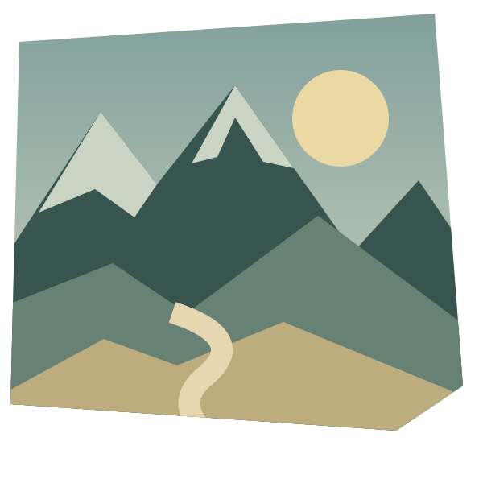

FIELDNOTESESSAYS IN OBSERVATION / NO. 01Look a little closer.
Perspective / A visual essay
A different
point of view.
Move the frame.
Find the story at its edges.
COLLECT / ARRANGE / RECONSIDER

Fig. 01 — A place to begin01
There is more
than one way
to see a place.